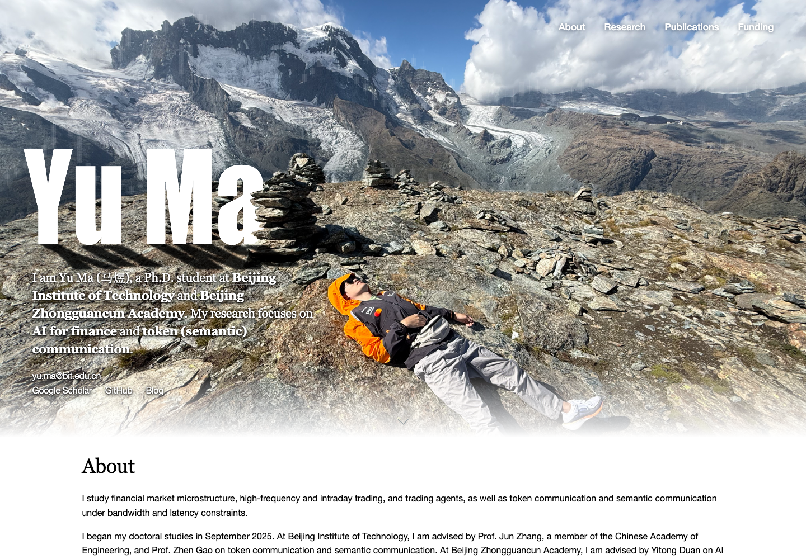
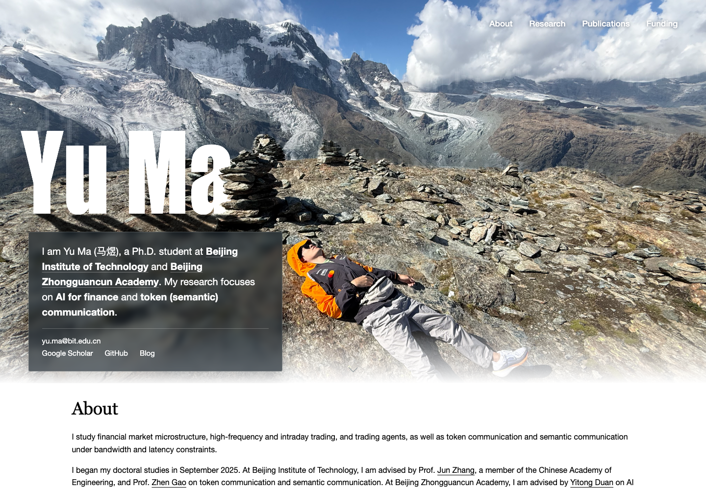
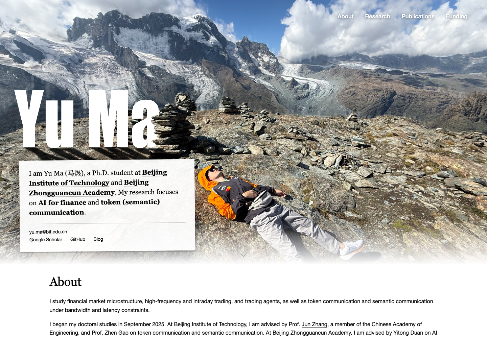
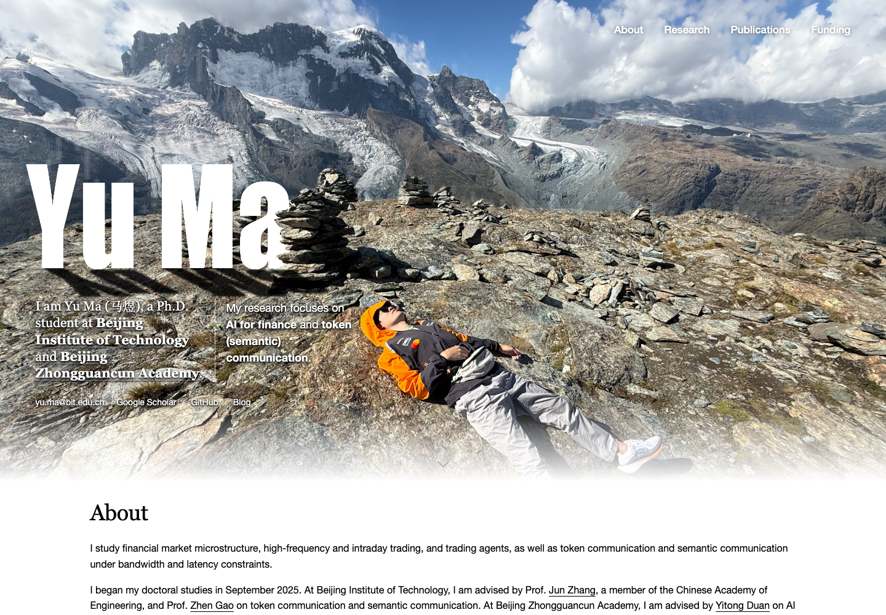
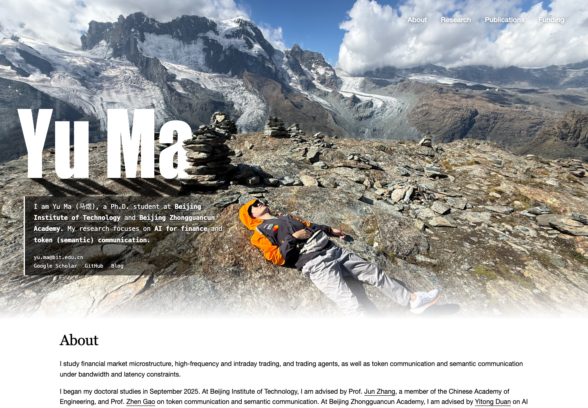
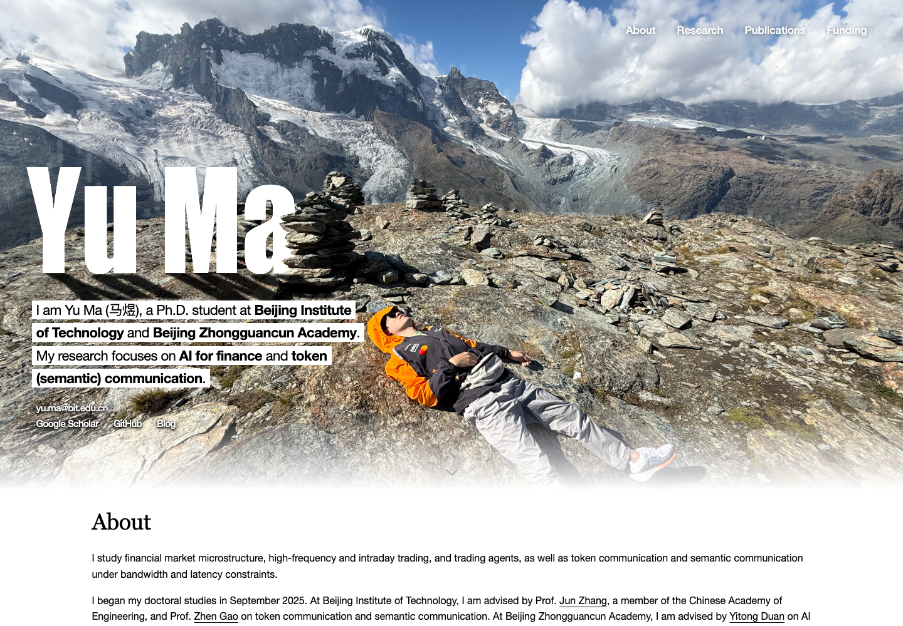

Unframed serif
White Georgia text sits directly on the rock. Soft, dense shadows preserve the photograph’s texture.
Mobile previewThe same introduction, six visual directions. Open each study to explore the landscape and follow the profile links.

White Georgia text sits directly on the rock. Soft, dense shadows preserve the photograph’s texture.
Mobile preview
A translucent charcoal surface and a restrained blur make room for clear, contemporary sans-serif text.
Mobile preview
Black serif text on a white paper surface introduces a deliberate physical contrast with the mountain.
Mobile preview
A serif identity and a sans-serif research sentence form two compact columns above the contact links.
Mobile preview
Monospaced type, a white margin rule and a fading dark field connect research notes with a real outdoor scene.
Mobile preview
Black text on individual white lines creates a photographic editorial treatment with a strong graphic presence.
Mobile preview